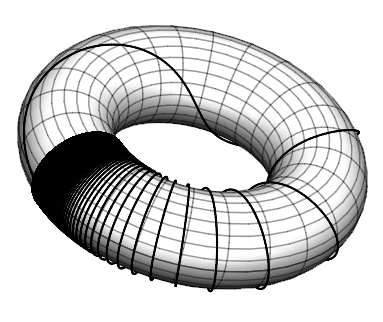

Reports on Continued Fractions Activities
Contents
Reports on Continued Fractions Activities#
Continued Fraction Activity 1#
Open a fresh Jupyter notebook and type in a code cell the following three lines:
x0 = 1
x1 = (x0 + 2/x0)/2
print (x1)
and press and hold the control key and the Enter key. There, you have just used Python to compute the first Newton iterate for the square root of two; the computer should have printed out 1.5.
x0 = 1
x1 = (x0 + 2/x0)/2
print (x1, x1**2-2)
1.5 0.25
Continued Fraction Activity 2#
Now copy the final two lines of that cell (not the x0=1) and put them in a fresh code cell, and change x0 to x1 and x1 to x2 everywhere. Run it again. The notebook should print 1.4166666666666665. Do it again 4 more times, changing x2 to x3, and x3 to x4, and x4 to x5, and x5 to x6 in their newly copied lines. You should find after running the program that both x5 and x6 are 1.414213562373095; no matter how many more times you do this (x7, x8, whatever) it won’t change any more.
x2 = (x1 + 2/x1)/2
print (x2, x2**2 - 2)
1.4166666666666665 0.006944444444444198
x3 = (x2 + 2/x2)/2
print (x3, x3**2-2)
1.4142156862745097 6.007304882427178e-06
x4 = (x3 + 2/x3)/2
print (x4, x4**2 - 2)
1.4142135623746899 4.510614104447086e-12
x5 = (x4 + 2/x4)/2
print (x5, x5**2-2)
1.414213562373095 -4.440892098500626e-16
x6 = (x5 + 2/x5)/2
print (x6, x6**2-2)
1.414213562373095 -4.440892098500626e-16
Continued Fraction Activity 3#
Now go back and modify your print statements to be print(x1, x1**2-2), print(x2, x2**2-2), and so on, all the way up to print(x6, x6**2-2) and run all the cells again (in order). You should see that the second numbers printed get smaller each time, until the line for x5. This says that x5 squared is only about -4.4 times ten to the minus 16 smaller than 2 (we will see in a moment that this is not a very trustworthy statement). That is, Python says that x5 is the exact square root of a number only a proton’s width away from two (see the appendix on floating point numbers).
We did this already, reported above
Continued Fraction Activity 4#
Either by going back and changing all your previous cells, or by writing fresh cells, enter the following (it can all be in one cell)
p0 = 1
q0 = 1
p1 = p0**2 + 2*q0**2
q1 = 2*p0*q1
print(p1, q1, p1/q1, (p1/q1)**2-2, p1**2 - 2*q1**2, q1**2)
#... (these dots mean do the case p2/q2, p3/q3, all the way up to the end)
p6 = p5**2 + 2*q5**2
q6 = 2*p5*q5
print(p6, q6, p6/q6, (p6/q6)**2-2, p6**2 - 2*q6**2, q6**2)
p0 = 1
q0 = 1
p1 = p0**2 + 2*q0**2
q1 = 2*p0*q0
print(p1, q1, p1/q1, (p1/q1)**2-2, p1**2 - 2*q1**2, q1**2)
p2 = p1**2 + 2*q1**2
q2 = 2*p1*q1
print(p2, q2, p2/q2, (p2/q2)**2-2, p2**2 - 2*q2**2, q2**2)
p3 = p2**2 + 2*q2**2
q3 = 2*p2*q2
print(p3, q3, p3/q3, (p3/q3)**2-2, p3**2 - 2*q3**2, q3**2)
p4 = p3**2 + 2*q3**2
q4 = 2*p3*q3
print(p4, q4, p4/q4, (p4/q4)**2-2, p4**2 - 2*q4**2, q4**2)
p5 = p4**2 + 2*q4**2
q5 = 2*p4*q4
print(p5, q5, p5/q5, (p5/q5)**2-2, p5**2 - 2*q5**2, q5**2)
p6 = p5**2 + 2*q5**2
q6 = 2*p5*q5
print(p6, q6, p6/q6, (p6/q6)**2-2, p6**2 - 2*q6**2, q6**2)
3
2 1.5 0.25 1 4
17 12 1.4166666666666667 0.006944444444444642 1 144
577 408 1.4142156862745099 6.007304882871267e-06 1 166464
665857 470832 1.4142135623746899 4.510614104447086e-12 1 221682772224
886731088897 627013566048 1.4142135623730951 4.440892098500626e-16 1 393146012008229658338304
1572584048032918633353217 1111984844349868137938112 1.4142135623730951 4.440892098500626e-16 1 1236510294063800469693771621893337765354742124544
Continued Fraction Activity 5#
x = [1.0] # x is a list with just one element, namely the floating-point number 1.0
print(x[0]) # the first element has index zero; Python counts from 0
Type the above two lines into a fresh cell (don’t just copy-and-paste, really type; it’s practice for your fingers). You don’t have to type the comments (The hashtag and everything after that on each line) but you may.
x = [1.0] # x is a list with just one element, namely the floating-point number 1.0
print(x[0]) # the first element has index zero; Python counts from 0
1.0
Continued Fraction Activity 6#
type these lines in
x = [1.0]
print(x[0])
nxt = (x[0]+2/x[0])/2
x.append(nxt) # This appends an element to the list "x" (if the list was called y, you would say y.append( nxt ))
print("The list x is ", x)
print("The first element of x is ", x[0])
print("The second element of x is ", x[1])
x = [1.0]
print( x[0] )
nxt = (x[0]+2/x[0])/2
x.append( nxt ) # This appends an element to the list "x" (if the list was called y, you would say y.append( nxt ))
print( "The list x is ", x )
print( "The first element of x is ", x[0] )
print( "The second element of x is ", x[1] )
1.0
The list x is [1.0, 1.5]
The first element of x is 1.0
The second element of x is 1.5
Continued Fraction Activity 7#
Type in the following and execute them:
x = [1.0] # We reproduce our iteration using the list and indices into the list so we don't have new variable names
nxt = (x[0]+2/x[0])/2
x.append(nxt)
nxt = (x[1]+2/x[1])/2
x.append(nxt)
nxt = (x[2]+2/x[2])/2
x.append(nxt)
nxt = (x[3]+2/x[3])/2
x.append(nxt)
nxt = (x[4]+2/x[4])/2
x.append(nxt)
nxt = (x[5]+2/x[5])/2
x.append(nxt)
print("The list x is ", x)
print("The fifth element of x is ", x[4])
print("The sixth element of x is ", x[5])
print("The seventh element of x is ", x[6])
x = [1.0] # We reproduce our iteration using the list and indices into the list so we don't have new variable names
nxt = (x[0]+2/x[0])/2
x.append( nxt )
nxt = (x[1]+2/x[1])/2
x.append( nxt )
nxt = (x[2]+2/x[2])/2
x.append( nxt )
nxt = (x[3]+2/x[3])/2
x.append( nxt )
nxt = (x[4]+2/x[4])/2
x.append( nxt )
nxt = (x[5]+2/x[5])/2
x.append( nxt )
print( "The list x is ", x )
print( "The fifth element of x is ", x[4] )
print( "The sixth element of x is ", x[5] )
print( "The seventh element of x is ", x[6] )
The list x is [1.0, 1.5, 1.4166666666666665, 1.4142156862745097, 1.4142135623746899, 1.414213562373095, 1.414213562373095]
The fifth element of x is 1.4142135623746899
The sixth element of x is 1.414213562373095
The seventh element of x is 1.414213562373095
Continued Fraction Activity 8#
Type in the following and execute it:
x = [1.0]
for k in range(6):
nxt = ( x[k] + 2/x[k] )/2 # We don't really need "nxt" but it's a little more readable this way
x.append( nxt )
print( x )
The indentation is important there. More concisely, without the extra variable “nxt”,
x = [1.0]
for k in range(6):
x.append( (x[k]+2/x[k])/2 )
print( x )
x = [1.0]
for k in range(6):
nxt = (x[k] + 2/x[k])/2 # We don't really need "nxt" but it's a little more readable this way
x.append(nxt)
print(x)
[1.0, 1.5, 1.4166666666666665, 1.4142156862745097, 1.4142135623746899, 1.414213562373095, 1.414213562373095]
x = [1.0]
for k in range(6):
x.append((x[k]+2/x[k])/2)
print(x)
[1.0, 1.5, 1.4166666666666665, 1.4142156862745097, 1.4142135623746899, 1.414213562373095, 1.414213562373095]
Continued Fraction Activity 9#
Write a loop that uses two lists of integers, say p and q, and computes the exact integer numerators and denominators for the first six iterates. Our answer: When we print p and q we get the following:
We have given our answer.
Continued Fraction Activity 10#
Feel free to copy that sequence on a piece of paper, “close the book” (or look away from the screen, whatever), and take ten minutes or so and write as many questions as you can, and don’t worry about the answers.
Can we use symbols in continued fractions? Matrices? Can we easily add, multiply, divide continued fractions? Compose them? Can we express known functions as continued fractions? Why aren’t continued fractions used more than they are? Can we visualize them in colour somehow? Is there any “continued fraction art”? We don’t know, but you might look at the Bridges Math Art website which is very interesting.
Who invented continued fractions first? Or were they invented more than once, in more than one place and time? Here’s an article from “Convergence”, a nice open access history journal by the Mathematical Association of America. We don’t really want to answer questions here, just show you some of the ones we thought of; but we find it sort of irresistible. Hey, consider our profession.
Are there continued fractions that don’t make sense as we let the number of partial quotients go to infinity? (Yes; with some negative entries). Are continued fractions applied to anything? (a quick googling finds some gems at Stack Exchange only some of which we knew). Then we found an open-access paper by Carlo Sanna that has several more. Are there “continued additions?” “continued multiplications?” (yes, and yes; called “infinite series” and “infinite products” respectively; you will likely learn about infinite series in calculus, but infinite products are less commonly seen in courses). “continued logarithms?” Yes, but only recently; see work by Jonathan M. Borwein and NJC and others. Continued exponentials? Oh, yes! The “infinite tower of powers” is a perennial favourite question, and leads to the Lambert W function. Writing this, RMC is a little surprised that it hasn’t been mentioned till now!
Continued Fraction Activity 11#
Write a Python program that plots the Gauss map on a torus. Think of it as wrapping the top and bottom of the unit square around a cylinder, and then bending the cylinder around to make a torus. Compare to the graph on the cover of the March 1992 issue of the American Mathematical Monthly, that is, Volume 99, no. 3.
We did this in Maple. Yah, this is a cheat. Again, we are curious about your solutions.
{kind=link}
Continued Fraction Activity 12#
Which method gives a better approximation to \(\sqrt{73}\), the \(a + b/(2a)\) formula or the “blending” formula taught in some high schools and mentioned above?
The high-school “blending” formula is less accurate—if one uses the \(a + b/(2a)\) formula to best advantage, that is. Here, if we don’t think about using \(81\) instead of \(64\), the high-school method is a bit better: \(8+9/17 = 145/17 \approx 8.5294\); when squared, this is \(72.7508\), just a bit bigger than \(72.75\). Now, if we use \(73 = 64 + 9\) we get \(8 + 9/16 = 8.5625\), which, when squared, gives \(73.3164\), which is worse than the blending formula (being too big by more than 0.3).
But if we remember that the \(\sqrt{a^2+b} \approx a + b/(2a)\) formula works for negative \(b\), then \(73 = 81 - 8\) gives the formula \(9 - 8/18 = 77/9 \approx 8.55556\) which, when squared, gives \(73.1976\), which is only too big by about \(0.2\).
If you somehow know that \(\sqrt{73} \approx 8.54400\) to six decimals (if you did, though, why are you computing it by hand?) then you could compare the approximations directly (and you would come to the same conclusion).
import numpy as np
rt73 = np.sqrt(73.0)
a = 8
b = 9
print(" 73 is {}^2 + {}= {}".format(a,b,a**2+b))
cfapprox = a + b/(2*a)
highschool = a + b/17
othercfapprox = a+1 - (b-1)/(2*(a+1))
errcf = cfapprox - rt73
errhi = highschool - rt73
errother = othercfapprox - rt73
print(" highschool error = {}, \n continued fraction error = {}, \n other cf error = {}".format(errhi,errcf,errother))
73 is 8^2 + 9= 73
highschool error = -0.014591980611648125,
continued fraction error = 0.018496254682469626,
other cf error = 0.011551810238024984
Continued Fraction Activity 13#
Which method would be easier to teach to high school students, do you think? Why do you think so?
We think that both could be done. Whether one has time for either in these busy times, that’s a different question. We prefer the \(a + b/(2a)\) formula because it’s related to continued fractions, and is more accurate. But the blending formula can be derived from linear interpolation (in \(y\), not \(x\)) and is a nice exercise in algebra and graphing. We are curious as to your opinion, though.